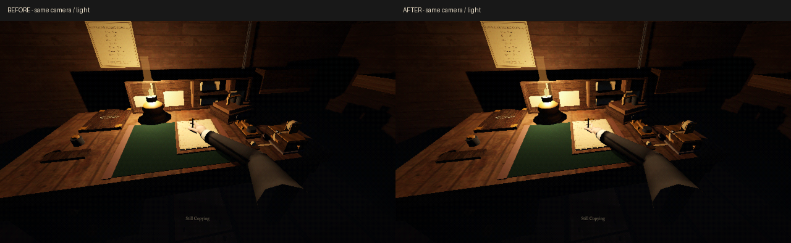
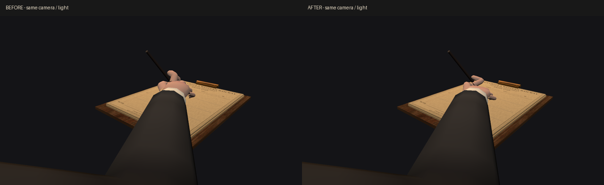
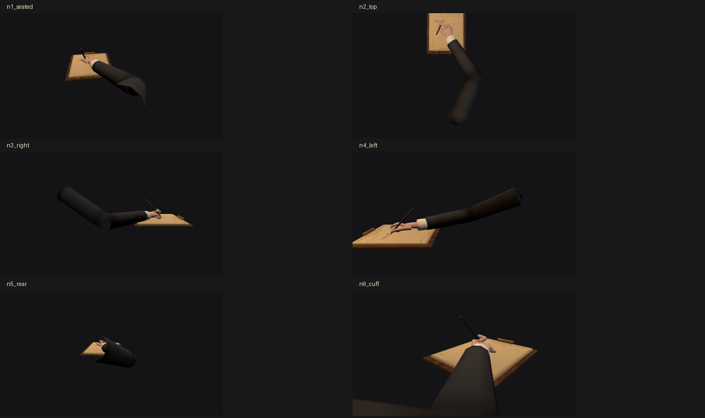

Реальный оконный Godot 4.7.1, 1280×720. Видео: вход, 16 букв, перенос строки, уход руки. Штатные часы передачи и письма; постановочная подготовка — вступление пропущено, оператор уже сидит, режиссёр смены отключён. Это демонстрация рига, не человеческий плейтест.

Одинаковые камера, свет, пять написанных букв; подменён только меш кисти.

Ладонь уплощена; указательный ниже, пальцы тоньше и разнесены. Непроникновение и три контакта проверены тестом, но это не сертификат анатомии. Модель остаётся стилизованной; переходы отдельных оболочек видны на макро.

Никаких новых механик или затемнения комнаты в этой правке. Эмоциональная приёмка остаётся за игроком.